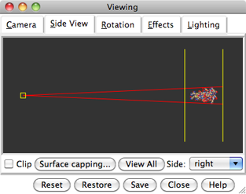
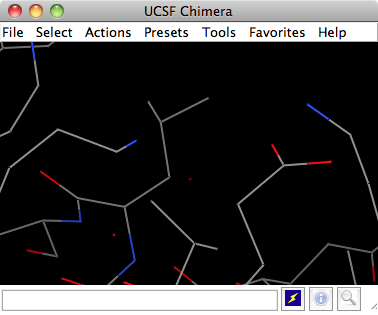
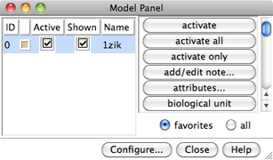
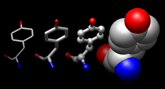
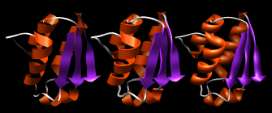
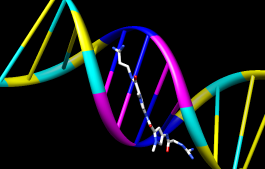
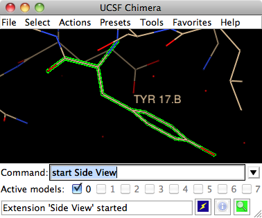
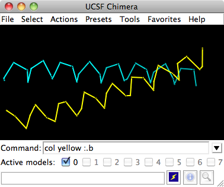
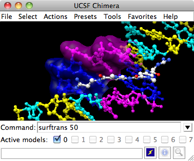

DNA helix with bound netropsin
DNA helix with bound netropsin
This tutorial provides an overview of basic features in Chimera for displaying and manipulating structures. You can interact with Chimera by using the menus and/or by entering commands. The basic features of Chimera are available either way, but several tools are not available as commands, and several command operations (and scripting) are not available through the menus. Thus, it is useful to become familiar with both ways of interacting with Chimera.
The Working with menus and Working with commands sections were designed to be independent of each other. They cover (for the most part) identical operations, accomplished in different ways. If you go through both sections, you can skip portions that cover issues you already understand. You can also go back and forth between the sections to see the correspondence between menu and command operations.
| Item | Example | Description |
| Keyboard key | Ctrl | The control key |
| Mouse key | Btn1 | Mouse button 1 (left button) |
| Menu action | File→Open | File Menu bar pulldown, followed by Open |
| Filename (or file path) | 1zik | File 1zik |

|
UCSF Chimera with 1zik
On Linux, run the executable “chimera” in the bin directory of your Chimera installation. If Chimera is installed in /usr/local/chimera, run /usr/local/chimera/bin/chimera from a shell.
On Windows, start Chimera by doubleclicking the Chimera icon in the directory called bin in your Chimera installation. If Chimera is installed in \Program Files the executable will be in the directory \Program Files\Chimera\bin. By default, a Chimera icon will also be placed on your desktop.
On Mac, start Chimera by clicking the Chimera icon or by doubleclicking the Chimera application in the Finder window.
A splash screen will appear, to be replaced in a few seconds by the main Chimera window containing either the graphics display or the Rapid Access list of recently used files (it does not matter which, the following instructions will work with either; the Rapid Access interface reverts to the graphics display as soon as something is opened). If you like, enlarge the main window by clicking and dragging its lower right corner. Chimera includes a number of tools and dialogs that can be present on the screen at the same time. Each Chimera window or tool can be moved to a convenient location by clicking its top bar and dragging.
|  |
Side View showing 1zik
Now open a structure. Choose File→Fetch by ID and type 1zik in the PDB ID field. The structure will appear in the main graphics window; it is a leucine zipper formed by two peptides.
A preset is a predefined combination of display settings. Apply interactive preset #2:
Presets→Interactive 2 (all atoms)This displays all atoms and color-codes atoms other than carbon by element (oxygens red, nitrogens blue, etc.); carbons are left in the initial model color, in this case tan.
Within the Side View, try moving the eye position (the small square) and the clipping planes (vertical lines) with the left mouse button. The Side View will renormalize itself after movements, so that the eye or clipping plane positions may appear to “bounce back,” but your adjustments have been applied.
| Mouse button | Modifier | Action |
| Btn1 (left button) | |
Rotation |
| Btn2 (middle button) | |
XY Translation |
| Btn3 (right button) | |
Scaling |
| Btn1 | Ctrl | Picking (selection) |
| Btn1 | Ctrl-Shift | Addition to (removal from) selection |
Try manipulating the structure in the main window with the mouse.
By default, the left mouse button controls rotation, the middle mouse
button controls XY translation, and the right mouse button controls
scaling.
If you are using a touchpad or single-button mouse, modifier keys allow
emulating the middle and right mouse buttons. These are
option and command
( ) on Mac keyboards.
) on Mac keyboards.
Continue moving and scaling the structures with the mouse in the graphics window and Side View as desired throughout the tutorial.
When the mouse focus is in the graphics window (you may need to click into it if you have been interacting with a different window), hovering the mouse cursor over an atom or bond (without clicking any buttons) will show identifying information in a pop-up “balloon.” The balloon will disappear when the cursor is moved away.
In combination with the control (Ctrl)
key, the mouse buttons have additional functions. By default,
picking from the screen (a type of selection)
is done by clicking on the atom
or bond of interest with the left mouse button (Btn1)
while holding down the Ctrl key.
To add to an existing selection, also hold down the
Shift key.
The selection is highlighted in green, and placing the mouse cursor over
the green magnifying glass icon  near the bottom right corner of the window pops up a “balloon”
that reports what is selected.
near the bottom right corner of the window pops up a “balloon”
that reports what is selected.
You can also drag out a selection area with Ctrl-Btn1 (sweep out an area before releasing). All atoms and bonds within that area will be selected. As before, Ctrl-Shift-Btn1 can be used to add to an existing selection, either by clicking or by dragging.
The arrow keys can be used to broaden, narrow, or invert a selection. Each press of the ↑ key will broaden a selection to the next available level. The selection hierarchy could include (depending on the initial selection): atom/bond, residue, bonded set of atoms, all atoms with the same chain ID, entire model. Similarly, the selection scope can be narrowed using the ↓ key. The → key inverts the selection so that selected atoms become deselected and vice versa.
Spend some time selecting various parts of the model. An easy way to deselect everything is to use Ctrl-Btn1 in any blank space in the graphics window.
| Menu Item | Description |
| Atoms/Bonds | Controls the display and representation of atoms and bonds. |
| Ribbon | Controls the display and representation of ribbons. |
| Surface | Controls the display and representation of molecular surfaces. |
| Color | Colors selected objects. Color target can be limited to object types indicated by the radio buttons. |
| Label | Labels selected atoms. The residue submenu labels residues containing the selected atoms. |
| Focus | Focuses the view on the selected atom(s), zooming and translating if necessary. |
| Set Pivot | Sets the center of rotation based on the selected atom(s) without adjusting the view. |
| Inspect | Launches the Selection Inspector. |
| Write List | Writes a list of the currently selected objects to a parsable text file. |
| Write PDB | Writes the coordinates of the currently selected atoms to a PDB file. |
In general, operations performed with the Chimera Actions menu affect the current selection. Selections can be made in many ways, including with the Select menu or with the mouse (as described above). When nothing is selected, the Actions menu applies to everything.
The current selection is highlighted in green in the structure(s),
and the magnifying glass icon
near the bottom right corner of the window is also green
when a selection exists.
Select and hide the water (red dots):
Select→Structure→solventAlternatively, the water could have been selected using Select→Residue→HOH. Even though the water is hidden, it is still selected.
Clear the selection and display only the chain trace:
Select→Clear SelectionThe chain trace includes just the α-carbons (atoms named CA), connected in the same way that the residues are connected.
Try picking two α-carbons, one from each peptide (using Ctrl-Btn1 for the first, Ctrl-Shift-Btn1 for the second). Label the atoms you have selected, first by atom name and then by residue name and number:
Actions→Label→nameEach residue label is of the form:
res_name res_number.chainOne peptide is chain A and the other is chain B. Clear the selection and undisplay the residue labels:
Select→Clear Selection(Another way to clear a selection is to Ctrl-Btn1 click in empty space.)
Color the two chains different colors:
Select→Chain→ARepeat the process to color chain B yellow.
|  |
1zik colored by element
Select chain A by picking any atom or bond in the chain, then hitting the ↑ key twice, once to expand the selection to the entire residue and another time to expand it to the entire chain. Display its full backbone:
Actions→Atoms/Bonds→backbone only→fullDisplay all atoms of chain A only (which is still selected):
Actions→Atoms/Bonds→show onlyDisplay all atoms and color them by element:
Select→Clear SelectionThe by element coloring applies to all elements including carbon (gray), whereas by heteroatom coloring (as in the preset used near the beginning of the tutorial) leaves carbons unchanged. Heteroatom-only coloring is useful for keeping different structures distinguishable by their different carbon colors.
|  |
Chimera Model Panel
Generally, each file of coordinates opened in Chimera becomes a model with an associated model ID number. Models are assigned successive numbers starting with 0. The Model Panel shows the current models and enables many operations upon them. Open this tool with Tools→General Controls→Model Panel. By default, the Model Panel is also listed in the Favorites menu.
A checkbox in the A(ctive) column of the Model Panel shows that the model is activated for motion; unchecking the box makes it impossible to move. Checking the box again restores the movable state. Make sure the line for 1zik is highlighted on the left side of the Model Panel (if not, click on it) and then click close in the list of functions on the right side. Use the Close button at the bottom to close the Model Panel.
Go on to Part 2 below, or exit from Chimera with File→Quit.

|
Chimera showing netropsin as spheres
With Chimera started and the Side View opened as described at the beginning of Part 1, open a different structure. Choose File→Fetch by ID and type 1d86 in the PDB ID field. The structure contains the molecule netropsin bound to double-helical DNA.
Use the “all atoms” preset, which will show the DNA as wire and netropsin as spheres:
Presets→Interactive 2 (all atoms)Color carbons white, then undisplay the water:
Select→Chemistry→element→CRemember that hiding atoms does not deselect them; they remain selected until the selection is cleared or replaced with a new selection.
Color the different nucleotides different colors. For example, color the adenine deoxynucleotides blue:
Select→Residue→DAAnalogously, color cytosine deoxynucleotides (DC residues) cyan, guanine deoxynucleotides (DG residues) yellow, and thymine deoxynucleotides (DT residues) magenta. Clear the selection with Select→Clear Selection or by picking in empty space.
Rotate, translate, and scale the structure as needed to get a better look (see Using the mouse to review how this is done). Continue moving and scaling the structure as desired throughout the tutorial.
|  |
Atoms/Bonds: wire, stick, ball & stick, and sphere
Next, try some different display styles, or representations.
Actions→Atoms/Bonds→sphereShowing ribbon automatically hides the mainchain (backbone) atoms.
Actions→Ribbon→show|  |
Ribbon: flat, edged, and rounded
DNA can be shown with special nucleotide objects. We will show “lollipops,” boxes, and a ladder.
Actions→Atoms/Bonds→nucleotide objects→settingsIn the resulting Nucleotides dialog:
Show the sequence of chain A and select one or a few residues in the sequence window with the mouse; this selects the corresponding part of the structure. Quit from the sequence window. In the Nucleotides dialog (also under Tools→Depiction in the menu):
Clear the selection (Select→Clear Selection), then use Nucleotides to show the DNA as a ladder:
|  |
Ribbons and nucleotide ladder
Hide the ribbons and show everything as ball-and-stick:
Actions→Ribbon→hide

|
Molecular surface (main)
Finally, have some fun with molecular surfaces. There are built-in categories within structures such as main and ligand; when nothing is selected, Actions→Surface→show displays the surface of main.
Actions→Surface→showSurface color can be specified separately from the colors of the underlying atoms. The ligand surface is tan and white because the original model color (tan) is used for surfaces of atoms not explicitly recolored by the user, and above, only the carbon atoms were changed to white. With the ligand still selected, choose Actions→Color→all options... to open the Color Actions dialog. In that dialog:
Clear the selection, change back to a solid surface, and then undisplay the surface.
Select→Clear SelectionAs an example of a more complicated selection process, show the surface of the adenine and thymine deoxynucleotides in chain B only:
The command line (Tools→General Controls→Command Line) equivalent is much more concise, but requires some knowledge of the atom specification syntax:
Command: surf :da.b,dt.bSometimes it is helpful to make a surface transparent: Actions→Surface→transparency→50%
Choose File→Quit from the menu to terminate the Chimera session.
DNA helix with bound netropsin

|
Chimera with Command Line
On Linux, run the executable “chimera” in the bin directory of your Chimera installation. If Chimera is installed in /usr/local/chimera, run /usr/local/chimera/bin/chimera from a shell.
On Windows, start Chimera by doubleclicking the Chimera icon in the directory called bin in your Chimera installation. If Chimera is installed in \Program Files the executable will be in the directory \Program Files\Chimera\bin. By default, a Chimera icon will also be placed on your desktop.
On Mac, start Chimera by clicking the Chimera icon or by doubleclicking the Chimera application in the Finder window.
A splash screen will appear, to be replaced in a few seconds by the main Chimera window containing either the graphics display or the Rapid Access list of recently used files (it does not matter which, the following instructions will work with either; the Rapid Access interface reverts to the graphics display as soon as something is opened). If you like, enlarge the main window by clicking and dragging its lower right corner. Chimera includes a number of tools and dialogs that can be present on the screen at the same time. Each Chimera window or tool can be moved to a convenient location by clicking its top bar and dragging.
Show the Command Line with Tools→General Controls→Command Line. By default, the Command Line is also listed in the Favorites menu.
Side View showing 1zik
Now open a structure. To fetch the structure directly from the PDB, use the command:
Command: open 1zikThe structure will appear in the main graphics window; it is a leucine zipper formed by two peptides.
A preset is a predefined combination of display settings. Apply interactive preset #2:
Command: preset apply int 2
This displays all atoms and color-codes atoms other than carbon by element (oxygens red, nitrogens blue, etc.); carbons are left in the initial model color, in this case tan.
Show the Side View:
Command: start Side ViewBy default, the Side View can also be started from the Favorites menu.
The Side View allows interactive scaling (zooming) and clipping. Within the Side View, try moving the eye position (the small square) and the clipping planes (vertical lines) with the left mouse button. The Side View will renormalize itself after movements, so that the eye or clipping plane positions may appear to “bounce back,” but your adjustments have been applied.
|  |
1zik with tyrosine 17 (B chain) selected
Try manipulating the structure in the main window with the mouse.
By default, the left mouse button (Btn1)
controls rotation, the middle mouse button (Btn2)
button controls XY translation, and the right mouse button
(Btn3) controls scaling.
If you are using a touchpad or single-button mouse, modifier keys allow
emulating the middle and right mouse buttons. These are
option and command
( ) on Mac keyboards.
) on Mac keyboards.
Continue moving and scaling the structures with the mouse in the graphics window and Side View as desired throughout the tutorial.
When the mouse focus is in the graphics window (you may need to click into it if you have been interacting with a different window), hovering the mouse cursor over an atom or bond (without clicking any buttons) will show identifying information in a pop-up “balloon.” The balloon will disappear when the cursor is moved away.
In combination with the control (Ctrl)
key, the mouse buttons have additional functions. By default,
picking from the screen (a type of selection)
is done by clicking on the atom
or bond of interest with the left mouse button (Btn1)
while holding down the Ctrl key.
To add to an existing selection, also hold down the
Shift key.
The selection is highlighted in green, and placing the mouse cursor over
the green magnifying glass icon
near the bottom right corner of the window pops up a “balloon”
that reports what is selected.
The arrow keys can be used to broaden (↑), narrow (↓), or invert (→) a selection. The hierarchy for broadening and narrowing a selection may include (depending on the initial selection): atom/bond, residue, bonded set of atoms, all atoms with the same chain ID, entire model. When a selection is inverted, the selected atoms become deselected and vice versa.
Spend some time selecting various parts of the model. An easy way to deselect everything is to use Ctrl-Btn1 in any blank space in the graphics window.
| Symbol | Function | Usage |
| # | model number | # model (integer) |
| : | residue | : residue (name or number) |
| :. | chain ID | :.chain |
| @ | atom name | @atom |
| * | whole wildcard | matches whole atom or residue names, e.g., :*@CA specifies the α-carbons of all residues |
| = | partial wildcard | matches partial atom or residue names, e.g., @C= specifies all atoms with names beginning with C |
| ? | single-character wildcard | used for atom and residue names only, e.g., :G?? specifies all residues with three-letter names beginning with G |
| z< | zone specifier | z<zone or zr<zone specifies all residues within zone angstroms of the indicated atoms, and za<zone specifies all atoms (rather than entire residues) within zone angstroms of the indicated atoms. Using > instead of < gives the complement. |
| & | intersection | intersection of specified sets |
| | | union | union of specified sets |
| ~ | negation | negation of specified set (when space-delimited) |
A Chimera command may include arguments and a target (or atom specification). For example, in the following color command,
Command: color hot pink :lyshot pink is an argument that specifies a color name, and the target :lys specifies all residues named LYS. (To see the built-in colors and their names, choose Actions→Color→all colors from the menu.)
If no target is specified, the command acts on all applicable items. For example,
Command: color hot pinkmakes all atoms (and their labels, surfaces, etc.) hot pink.
Unlike the Actions menu, commands do not automatically act on the current selection. However, the current selection can be specified as the target of a command with the word selected, sel, or picked.
Many commands have “~” versions that perform the opposite function. For example, change the structure back to its default color:
Command: ~colorThe command help can be used to show the manual page for any command. For example,
Command: help colorshows the manual page for the command color. The Chimera Quick Reference Guide lists all of the commands and gives some examples of atom specification. It can be accessed by choosing Help→Tutorials from the Chimera menu and clicking the “Chimera Quick Reference Guide” link.
Display only the atoms named CA (α-carbons):
Command: show @caTry picking two α-carbons, one from each peptide (using Ctrl-Btn1 for the first, Ctrl-Shift-Btn1 for the second). Label the atoms you have selected:
Command: label selThe label command shows atom information (atom name, by default). Undisplay the atom labels, then show labels for the residues containing the selected atoms:
Command: ~label
Command: rlabel sel
|  |
1zik with chain traces in different colors
res_name res_number.chainOne peptide is chain A and the other is chain B. Clear the selection and undisplay the residue labels:
Command: ~selectColor the two chains different colors; note that commands can be truncated to unique strings:
Command: ~rlabel
Command: color cyan :.aResidues and atoms can also be specified, along with or independent of chain:
Command: col yellow :.b
Command: col orange :5-9.a,12.a,8.bThe structure also includes water, which can be shown with:
Command: col magenta :14-18
Command: disp :leu.b
Command: col green :leu.b@cb
Command: disp solvent
-OR- (equivalent)
Command: disp :hoh
Display the full backbone of chain A:
Command: disp :.a@n,ca,c,oDisplay all atoms in chain A only:
Command: show :.aDisplay all atoms and color them by element:
Command: dispThe byelement coloring applies to all elements including carbon (gray), whereas byhet coloring (as in the preset used near the beginning of the tutorial) leaves carbons unchanged. Heteroatom-only coloring is useful for keeping different structures distinguishable by their different carbon colors.
Command: color byelement
Generally, each file of coordinates opened in Chimera becomes a model with an associated model ID number. Models are assigned successive numbers starting with 0. The Active models line in the Command Line tool shows which models are activated for motion. The checkbox for 0 (currently the leucine zipper) is activated. Unchecking the box makes it impossible to move model 0. Checking the box again restores the movable state.
Command: close 0closes the model. Go on to Part 2 below, OR exit from Chimera with the following command:
Command: stop

|
Chimera with Command Line
With Chimera started and the Command Line and Side View opened as described at the beginning of Part 1, open a different structure. Fetch the structure directly from the PDB:
Command: open 1d86The structure contains the molecule netropsin bound to double-helical DNA.
Use the “all atoms” preset, which will show the DNA as wire and netropsin as spheres:
Command: preset apply int 2Color carbons white, then undisplay the water:
Command: color white CResidue names can be identified by looking in the Select→Residue menu or by hovering the cursor over an atom or bond to see information in a pop-up “balloon.” Color the different nucleotides different colors, specifying them by residue name:
Command: ~disp solvent
Command: color blue :daRotate, translate, and scale the structure as needed to get a better look (see Using the mouse to review how this is done). Continue moving and scaling the structure as desired throughout the tutorial.
Command: color magenta :dt
Command: color yellow :dg
Command: color cyan :dc
Ribbons and nucleotide ladder
Next, try some different display styles, or representations.
Command: represent sphereNotice that commands (but not necessarily their keyword arguments) can be truncated to unique strings. For example, the command represent can be shortened to repr or rep but not re (because other commands also start with re), whereas the keywords stick, sphere, etc. cannot be truncated. If the truncation is not unique, one of the corresponding commands will be executed, but it may not be the one intended.
Command: repr bs :.a
Command: rep stick
Showing ribbon automatically hides the mainchain (backbone) atoms.
Command: ribbonDNA can be shown with special nucleotide objects. We will show “lollipops,” boxes with orientation bumps, and then a ladder. You can copy and paste into the Command Line. The command-line contents can be edited, and past commands can be accessed using the up and down arrow keys or Ctrl-p (previous) and Ctrl-n (next).
Command: ribrep edged
Command: ribr rounded
Command: nuc side tube/slab shape ellipsoid orient false style skinnyTo return to more general display styles, turn off the nucleotide objects:
Command: nuc side tube/slab shape box orient true style skinny :8-10.a
Command: nuc side ladder radius 0.3
Command: ~nucHide the ribbons and show everything as ball-and-stick:
Command: ~ribbon
Command: rep bs
|  |
Chimera showing a transparent surface
Finally, have some fun with molecular surfaces. There are built-in categories within structures such as main and ligand; when nothing is specified, surface shows the surface of main.
Command: surfaceSurface color can be specified separately from the colors of the underlying atoms. The ligand surface is tan and white because the original model color (tan) is used for surfaces of atoms not explicitly recolored by the user, and above, only the carbon atoms were changed to white. Show the ligand surface as red mesh:
Command: ~surf
Command: surf ligand
-OR- (equivalent)
Command: surf :nt
Command: surfrep meshParts of a surface can be shown:
Command: color red,s ligand
Command: surfrep solid
Command: ~surfSometimes it is helpful to make a surface transparent:
Command: surf :da,dt
Command: ~surf
Command: surf :da.b,dt.b
Command: transp 50,sWhen finished, exit from Chimera:
Command: stop now
DNA helix with bound netropsin